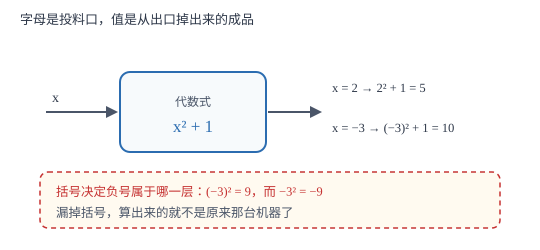

代数式的值与整体代入
求值是「把字母换成数、按原顺序算」；难点只有两处：负数与分数代入要加括号，已知条件给的是整体时不要硬拆。
| 所属主题 | 代数式 |
|---|---|
| 所属模块 | 代数 |
| 课标学段 | 第四学段（7~9 年级） |
| 前置知识 | 有理数的乘方、混合运算与科学记数法 |
| 核心素养 | 运算能力推理能力 |
教材定位
人民教育出版社《人教版（2024版）义务教育教科书·数学》
七年级上册第3章 代数式3.2 代数式的值
对应七上 3.2 代数式的值（两课时：实际问题中的求值、公式中的求值）。教材以「一般到特殊」立意；本篇把「负数进乘方要加括号」写成反证，并把整体代入的适用条件单独立出来。
说明
用具体数值代替代数式里的字母，按代数式指明的运算关系算出的结果，叫做代数式的值。同一个代数式，字母取不同的值，值一般不同；这说明代数式本身是一个「待定的值」，一旦字母定下来，值就定了。
直接代入三步：① 把字母换成数，负数、分数一律加括号；② 按「先乘方、再乘除、后加减、有括号先算括号」的顺序计算；③ 检查结果是否符合实际（人数不能是小数、长度不能为负）。
整体代入是另一种思路：当题目给出 a+b=5 这类条件、而单独求 a、b 求不出来时，把 a+b 整体看成一个数，用分配律把目标式子改写成含 (a+b) 的形式。例如 2a+2b-3=2(a+b)-3=2× 5-3=7。
使用场景
考试里求值题有两类面孔。一类是「当 x=2 时，求 3x^2-2x+1 的值」——直接代入，考的是运算顺序与符号。另一类给的是整体条件，如「已知 x+y=4，求 3x+3y-5」——考的是观察结构。
实际问题里也常求值：给出长与宽求面积、给出本金与利率求利息、给出速度与时间求路程。这类题算出数值后还要带单位、写答句；数值算对但漏单位，同样扣分。
注意点
负数、分数代入乘方或分母位置时必须加括号：x=-3 代入 x^2 要写成 (-3)^2=9，写成 -3^2 就变成 -9 了。
代入分数时，分数线同时起除号与括号的作用：x=1/2 代入 2x 是 2×1/2=1，代入 1/x 是 \frac11/2=2。
整体代入不能乱提：2a+2b=2(a+b) 成立，但 a^2+b^2 不能写成 (a+b)^2，后者多了一个 2ab。只在乘法分配律成立的地方提整体。
证明

图 1：字母是投料口，值是出品。负数进料必须套上括号，否则机器会把负号当成「整台机器取相反数」
证明
结论 1负数代入乘方必须加括号，因为 -3^2 与 (-3)^2 是两个不同的数。
-3^2 中乘方只作用于底数 3，前面的负号表示取相反数：先算 3^2=9，再取相反数得 -9；(-3)^2 中底数是 -3，平方得 9。代入 x=-3 时，代数式 x^2 的底数就是 -3，因此必须写成 (-3)^2。若省掉括号写成 -3^2，式子的含义被改成「3 的平方的相反数」，与原来的代数式不再相同。
关键一步依据是：负号有两种身份，写在乘方外面是取相反数，写在括号里是底数的一部分；括号决定负号属于哪一层。
结论 2已知 a+b=5 时，2a+2b-3 的值可以直接求出，不必分别求 a、b。
由乘法分配律，对任意 a、b 都有 2a+2b=2(a+b)，这是恒等变形，不依赖具体取值。把 a+b=5 整体代入，得 2× 5-3=7。可以这样做的原因，是目标式里 a 与 b 的系数相同，合并后只剩下 a+b 这一种组合；若目标是 a^2+b^2，仅知 a+b 就无法确定，因为不同组合给出不同结果（a=2,b=3 得 13，a=1,b=4 得 17）。
关键一步依据是：恒等变形保证整体替换不改变式子的值；能否整体代入，取决于目标式子能否只由已知的组合表示。
结论 3同一个代数式，字母取值不同，值一般不同；但只要两个式子恒等，任意取值都相同。
取 x^2：x=2 得 4，x=-2 也得 4，x=3 得 9，可见值随字母变化。再看 3(x+1)-3x，展开得 3x+3-3x=3，与 x 无关——x 被抵消了。这说明「值随字母变化」只是通常情况；化简后不含字母的式子，其值对任意取值都不变。
关键一步依据是：字母被抵消后式子成为常数，常数式的值不随取值改变。
动手实验
用计算器验算一组值：取 x=-2,-1,0,1,2，分别算 x^2、-x^2、(-x)^2。会发现 x^2 与 (-x)^2 两列数值完全相同（都非负），而 -x^2 全为它们的相反数。再算 2x+2 与 2(x+1)，两列数值一一相等——这就是「恒等」的直观证据。
解题思路
直接代入按四步走。第一步抄式子，不改符号、不合并；第二步逐个字母替换，遇到负数、分数立刻加括号；第三步按顺序算，先乘方、再乘除、后加减；第四步写答案并带单位。若式子里同一个字母出现多次，每次都要换，不能漏掉一处。
整体代入看结构，分三步。第一步观察目标式与已知式的形状：目标式里的字母是不是成对出现、系数是否相同？第二步提整体：用分配律把目标式改写成只含已知组合的形式，如 3x+3y-5=3(x+y)-5。第三步代值。若结构对不上（如出现平方、乘积），说明这个条件不够，需要另找条件，不能硬凑。
按场景的例题
例 1（场景：金融与增长） 银行定期存款利息
本金 P 元，年利率 r，存 n 年（单利），利息为 Prn 元。当 P=5000、r=2.5%、n=3 时，利息是多少？
解：代入得 5000× 2.5%× 3=5000× 0.025× 3=125× 3=375 元。注意 2.5% 要先化成 0.025 再乘，直接写 2.5 会差 100 倍。
答：利息 375 元。
例 2（场景：图形设计） 梯形面积公式求值
梯形面积公式 S=1/2(a+b)h。当 a=6、b=10、h=4 时，面积是多少？
解：代入得 S=1/2×(6+10)× 4=1/2× 16× 4=32。括号不能丢：若写成 1/2a+bh，结果变成 3+40=43，与正确答案相差 11。
答：面积为 32 平方单位。
例 3（场景：竞技与游戏） 答题比赛计分
某答题比赛规则：答对一题得 5 分，答错扣 2 分。某人答对 x 题、答错 y 题，得分为 5x-2y。若答对 18 题、答错 4 题，得分多少？
解：代入 x=18、y=4：5× 18-2× 4=90-8=82 分。注意「扣 2 分」是减，若写成 +2y 会得 98 分，与规则不符。
答：得分 82 分。
例 4（场景：生活优化） 出租车分段计价
某市出租车计价：起步价 13 元（含 3 千米），超出部分每千米 2.3 元。行驶 s 千米（s>3）的车费为 13+2.3(s-3) 元。行驶 8 千米要付多少元？
解：代入 s=8：13+2.3×(8-3)=13+2.3× 5=13+11.5=24.5 元。括号内先算，8-3=5 是超出部分；若漏掉括号写成 2.3× 8-3，会得 15.4 元，少算了 9.1 元。
答：车费 24.5 元。
例 5（场景：数据调查） 已知整体求值
已知 a+b=7，求下列各式的值：① 3a+3b ② 5a+5b-4 ③ a+b/2+1。
解：都用整体代入。① 3(a+b)=3× 7=21；② 5(a+b)-4=35-4=31；③ 7/2+1=4.5。之所以能整体代入，是因为每个式子都能写成「常数乘 (a+b) 再加常数」的形式。
答：① 21；② 31；③ 4.5。
常用推论
求值前先看能不能化简。化简之后再代入，计算量往往小一半，也更不容易算错符号。
整体代入的常见变形：2a+2b=2(a+b)；a+b-1=(a+b)-1；3a+3b-6=3(a+b)-6。涉及 ab 的式子（如 a+b/ab）无法只靠 a+b 求值。
若代数式化简后不含字母（如 3(x+1)-3x=3），它的值与字母取值无关，这类题常以「无论 x 取何值，结果都是……」的形式出现。
易错点
错把 x=-3 代入 x^2 时写成 -3^2，算出 -9。
为什么错负号没有进括号，乘方只作用于 3，结果成了「3 的平方再取相反数」。
正确写成 (-3)^2=9。凡是负数代入乘方，或代入分母、分数线下的位置，都要加括号。
错已知 a+b=5，求 a^2+b^2 时直接写成 (a+b)^2=25。
为什么错(a+b)^2=a^2+2ab+b^2，比 a^2+b^2 多一个 2ab，两者只在 ab=0 时才相等。
正确a^2+b^2=(a+b)^2-2ab，需要 ab 的值才能求；只知 a+b 无法确定。
错代入百分数时直接用 2.5 去乘。
为什么错百分数没有化成小数。2.5%=0.025，写成 2.5 相当于放大了 100 倍。
正确先化小数再代入：2.5%=0.025。
直观理解
代数式是一台机器，字母是投料口，值是从出口掉出来的成品。投 2 出 5，投 -3 出 10（因为平方把负号吃掉了）。负数进料必须套上括号，否则机器会把负号当成「整台机器取相反数」，出来的是另一个东西。整体代入则是：不拆开料包，整包投进去也能算。